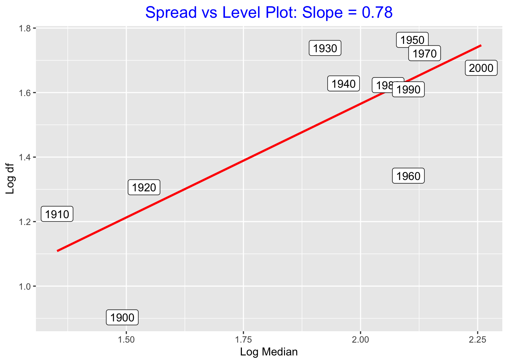
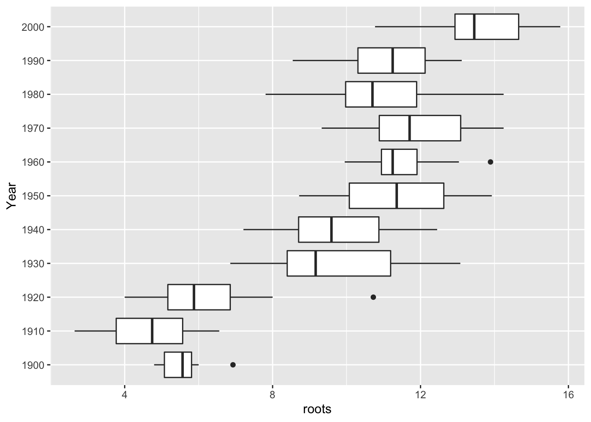
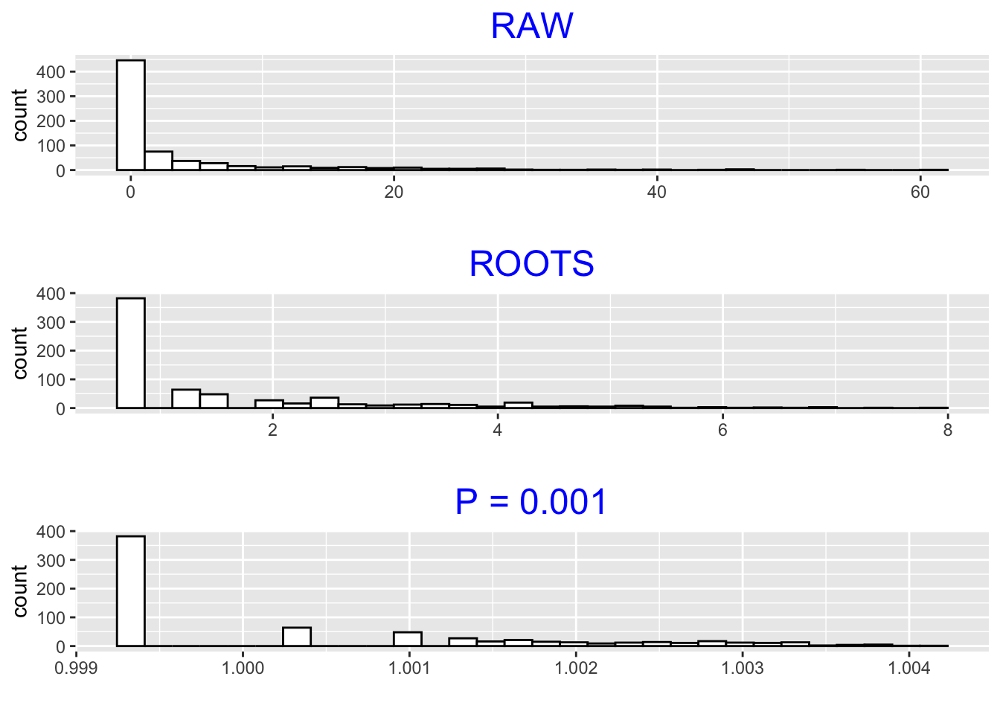
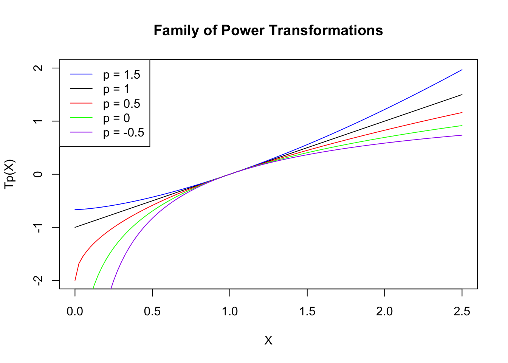
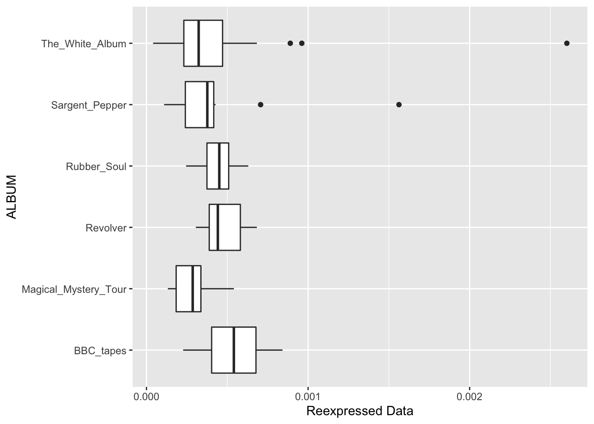

8 Transformations
In this lecture, we talk about transforming or reexpressing data. In the last two lectures, we have illustrated taking power transformations in order to reduce the dependence between spread and level. Here we talk more about the reasons why transformations can be helpful and more formally define the class of power transformations.
8.1 Why do we rexpress data?
Simply, we transform to make data easier to understand.
Here is a simple case in point. As you probably know, I’m a baseball fan and I’m interested in baseball data. Suppose we look at the number of home runs hit by all major league players in the year 1961. (I chose 1961 since it was a famous year for hitting home runs – in particular, Roger Maris set the season record by hitting 61 home runs that season.) Below I have displayed these home run numbers using a histogram.
library(LearnEDAfunctions)
library(tidyverse)
ggplot(homeruns.61, aes(HR)) +
geom_histogram(color = "black", fill = "white")
This data has strong right-skewness and is hard to analyze. All we can tell from the histogram is that most of the home run numbers are close to zero with a few large values. It is hard to distinguish the small values and I would have a hard time specifying an average home run number.
Generally, why is data hard to interpret?
Strong asymmetry such as displayed in the above histogram.
A large number of outliers. These outliers can distort standard measures of average and spread, such as the mean and standard deviation. Also it creates difficulties just in graphing the data.
Batches with different averages and widely differing spreads. We saw this problem in the previous two lectures.
Large and systematic residuals after fitting a model. We’ll talk more about patterns in residuals when we get to the plotting section of the class.
To make data easier to interpret, we want to choose a transformation which will change the shape of the data.
8.2 The shape of the data
The shape of the data is what you get when you draw a smooth curve over the histogram.
ggplot(homeruns.61) +
geom_histogram(aes(x = HR, y = ..density..)) +
geom_density(aes(x = HR),
color = "red")
If we remove all of the labeling information and bars, we can focus on the shape:

We are interested in finding a reexpression that can change this undesirable strong right-skewed shape.
8.3 Trivial reexpressions
There are some reexpressions that we could try that would change the values, but would have no impact on the shape of the distribution – we call these trivial reexpressions. For example, in baseball a home run counts as four bases. We could reexpress home runs to bases:
\[ Bases = 4 (Home runs) \]
If we constructed a histogram of all the bases numbers for all players, what would it look like? The shape would be identical to the right-skewed one shown above. In other words, multiplying a data by a positive constant will have no impact on the shape of the data. Similarly, it might be obvious that if we add any constant to the data, the shape of the data wouldn’t change. To summarize, if \(X\) is our raw data and we reexpress \(X\) by the linear transformation \[ Y = a X + b, \, {\rm where} \, a > 0, \] the shape of the \(Y\) data will be identical to the shape of the \(X\) data.
8.4 Nontrivial expressions: the power family
We are interested in finding reexpressions that can change the shape of the data so that it is easier to analyze. A convenient family of transformations is the power family. The basic form of this transformation is given by \[ T_p(X) = X^p. \] If we choose \(p = 1\), then \(T_p(X) = X\), the raw data. If we choose any value \(p\) that isn’t equal to 1, then will have a shape that is different from the raw data \(X\).
Let’s illustrate this fact using our home run data. In the figure below, we show the raw data (\(p = 1\)) and power transformations using (\(p = .5\)) and (\(p = .001\)). We make one small adjustment to the basic power transformation to account for the large number of zeros in the data. We first change \(X\) to \(X + .5\) (add .5 to each observation), and then take powers of \(X + .5\).

If we look from the raw data to the roots (\(p = .5\)) to the \(p\) = .001, we see distinctive changes in the data shape. The large amount of data close to zero in the raw plot gets squeezed out in the \(p = .5\) and \(p = .001\) graphs. In fact, in the \(p = .001\) plot, we are starting to see much more structure in the large data values.
8.5 Some properties of the power family
Above we presented the basic form" of the power transformation. An alternative form of this power transformation is thematched form” –
\[
T_p(X) = \frac{X^p - 1}{p}.
\]
Suppose we graph this function (for fixed \(p\)) as a function of \(x\).
Note that for any value of the power \(p\),
- the graph goes through the point (1, 0) – that is \(T_p(1) = 0\)
- the derivative of the graph at \(x = 0\) is equal to 1 – that is, \(T_p'(1) = 1\)
Below we have graphed the function \(T_p(x)\) for the powers \(p = 1.5, 1, .5, 0, -.5\).

What do we notice in the graphs?
we confirm that all of the graphs go through (1, 0) and have the same slope at that point
all of the curves are increasing in \(x\) (This is an important property – when we apply this matched transformation to our raw data, we will preserve the order in the data.)
with respect to concavity
if \(p\) > 1, the graph is concave up
if \(p\) < 1, the graph is concave down
if \(p\) = 1, we have a linear function
as \(p\) moves away from 1, the curve becomes more curved, which means that the concavity increases
What impact does this concavity have on changing the shape of our data?
If \(p\) > 1, then the graph is concave up, which means that the transformation will expand the scale more for large \(x\) than for small \(x\).
Similarly, if the power \(p < 1\) (graph is concave down), the transformation will expand the scale more for small \(x\) than for large \(x\).
Note that if \(p < 0\), the coefficient of \(x^p\) will be negative. This might seem odd (we don’t usually have data with negative sign), but this is necessary to make all of these matched transformations increasing in \(x\).
8.6 The log transformation
The log transformation actually is a special case of a power transformation. Consider the matched form of the power family. Fix \(x\) and let the power \(p\) approach zero. Then it is a straightforward calculation to show that \[ T_p(x) = \frac{x^p - 1}{p} \rightarrow ln(x), \] where \(\ln()\) is the natural log function. So a log function essentially is a power transformation for \(p = 0\).
Does it matter what type of log we take when we reexpress? No. The only difference between log(base e) and log (base anything else) is a scalar multiple, which is a trivial reexpression. In this case, we will generally take log base 10. We do so for ease of interpretation and communication.
8.7 Ladders of powers
John Tukey used a ladder motif to describe different values \(p\) of the power transformation. We view the powers as rungs of a ladder.

The raw data can be represented as a \(p = 1\) reexpression. Each move down the ladder (by a multiple of .5) is called one step and represents one unit change in the curvature of the transformation. If we wish to reexpress our data, we might change our data by taking roots, which is one step away from the raw data. If we wish to make a more drastic transformation, we might take another step, trying logs, which is the \(p = 0\) transformation.
In the next lecture, we’ll get some experience taking power transformations with the objective of making a data set more symmetric.